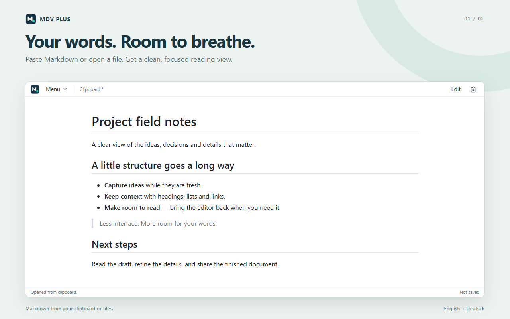

A clearer view of your words
Markdown.
Made readable.
A note from your clipboard. A file on your computer.
Less interface between you and your next good idea.
Chrome extension · English & German · Store listing in preparation

From text to something clearer
Paste. Read.
Edit when you need to.
- 01
Bring your Markdown
Open text from your clipboard or choose a local Markdown file. Manual paste is available if clipboard access is denied.
- 02
Give it room
Read formatted headings, lists, tables and code. A compact menu keeps the focus on the document.
- 03
Make it yours
Show the editor alongside the preview. Open, save or save under a new name. If direct saving is unavailable, MDV Plus uses downloads.
Know what your tool does
Your document is rendered
in your browser.
MDV Plus does not upload your document to a publisher-operated rendering service. Chrome may synchronize your settings, and documents can load external resources. Optional website access is controlled by you.
What is processed, stored and shared →A question or an idea?
For support, feedback or privacy questions:
wegasolutions@googlemail.comPlease do not send passwords, sensitive documents or private file contents when reporting a problem.